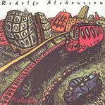

| Artist: | Rodolfo Alchourron |
| Title: | Talisman |
| Label: | Viajero Inmovil |
| Length(s): | 51 minutes |
| Year(s) of release: | 1994/2004 |
| Month of review: | [09/2004] |
| 1) | Arbol De Sirenos | 6.43 |
| 2) | Confliction | 5.24 |
| 3) | Milonga De Los Invisibles | 7.40 |
| 4) | Hola Y Adioses | 7.32 |
| 5) | Amiga Nueva | 5.18 |
| 6) | Vola Gorriom | 7.25 |
| 7) | Por Calles De Barrio | 11.13 |
Confliction is pure jazz and as a result not that interesting. With Milonga De Los Invisibles we return to quieter waters, with easy going acoustic guitar accmompanied by subtle piano. The wordless vocal and all make this track quite similar to the opener. Serene music, close to jazz, but more than that, a bit filmic maybe. Towards the end the music becomes a bit louder.
We alternate. Hola Y Adioses is a bit more up-beat again, by virtue of the piano. Plenty of plain jazz, but the addition of flugelhorn and clarinet give the music a more worked out, orchestral feel. It does continue to be quite laid back.
Amiga Nueva is really a vocal track, the bandeneon and the flugelhorn accompany the carefully percussive backdrop. Vola Gorriom on the other hand is a playful and rather fast paced one. It all stays quite light, but it has variety and agility. Por Calles De Barrio is by far the longest track on the album. It is one of the quieter ones, but with the flugelhorn occasionally erupting somewhat. The bass is quite prominent playing melodies as a backdrop for the tinkling piano. The vocals are spoken this time.